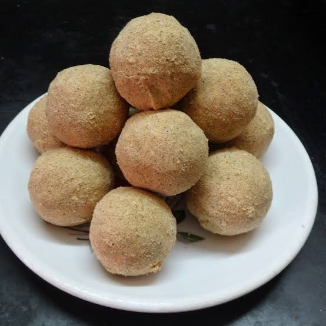

Telugu Ruchulu
తెలుగు రుచులు
Sunnundalu/
సున్నుండలు
Home Page
Click to change the language
తెలుగు కోసం క్లిక్ చేయండి
Ingredients:
1 cup urad dal (black gram, skinned)
3/4 cup powdered jaggery or sugar
1/4 cup ghee (melted, as needed)
1/2 tsp cardamom powder
2 tbsp chopped nuts (cashews, almonds - optional)

Instructions:
Roast the urad dal –
Dry roast urad dal on low flame until it turns golden and aromatic. Let it cool completely.
Grind to a fine powder –
Blend the roasted urad dal into a fine powder.
Mix with sugar & cardamom –
Add powdered jaggery or sugar and cardamom powder to the ground dal. Mix well.
Add ghee & nuts –
Warm the ghee, mix it into the flour gradually, and add chopped nuts if using.
Shape laddus –
Take small portions and roll into round laddus while the mixture is still warm. Let them set before storing.
Tip
కావలసినవిః
1 కప్పు ఉడకబెట్టిన పెసరపప్పు (సన్నగా తరిగినది)
3/4 కప్పు పొడి బెల్లం లేదా చక్కెర
1/4 కప్పు నెయ్యి (అవసరమైతే)
1/2 టీస్పూన్ జీడిపప్పు పొడి
2 టేబుల్ స్పూన్లు తరిగిన కాయలు (జీడిపప్పు, బాదం-ఐచ్ఛికం)
ఉడికించిన పప్పు-
ఉడికించిన పప్పు చిన్న మంట మీద బంగారు రంగులోకి మారే వరకు వేయించాలి. పూర్తిగా చల్లబరచడానికి అనుమతించండి.
ఉడికించిన జీడిపప్పును మిక్సీలో వేసి మెత్తగా పేస్ట్ చేయాలి.
చక్కెర మరియు ఏలకులను కలపండి-
పొడి బెల్లం లేదా చక్కెర మరియు ఏలకుల పొడిని వేయించిన పప్పుకు జోడించండి. బాగా కలపండి.
నెయ్యి మరియు గింజలను జోడించండి-
నెయ్యిని వేడి చేసి, క్రమంగా పిండిలో కలపండి మరియు ఉపయోగిస్తే తరిగిన గింజలను జోడించండి.
లడ్డు ఆకారం-
మిశ్రమం వేడిగా ఉండగానే చిన్న భాగాలు తీసుకొని గుండ్రని లడ్డు లోకి చుట్టండి. నిల్వ చేసే ముందు వాటిని అమర్చనివ్వండి.
చిట్కా